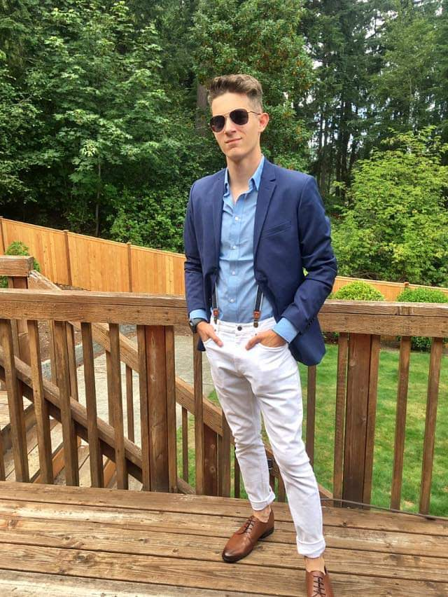

About Me
Starting out with some background of myself, I was born in Santa Maria, California and moved up to Washington when I was 7. I have been surrounded with technology my whole life growing up. I have been around things like printers, kiosks, atms, and other computers, building my own computer when I was younger.
A bit nerdy, but I am into 3d modeling and 3d printing that I do for a hobby, with of which I have made a full-size HALO Reach Spartan Suit that had taken me about 2 years to make. I am a member of a HALO costuming group called the 405th. We are a world-wide group that goes to conventions as well as events that we are invited out to, like Microsoft events, 343 events, and make a wish foundation events. I also have an Etsy store with a friend selling 3d print files and full 3d prints.
Technology is the future and not only do I want to work in a tech field, I want to be surrounded by it and learn as much as I can to be able to better myself.